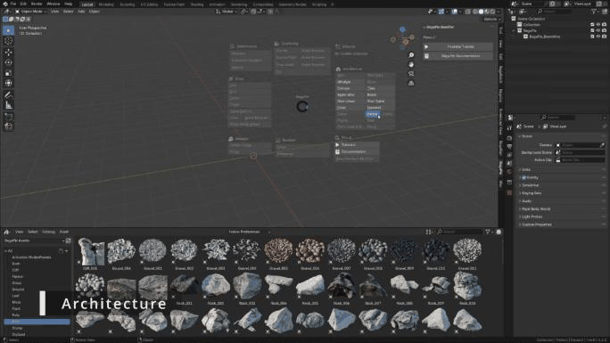

Architecture
The Architecture section of the J pie menu creates fully parametric building elements. Every element has a Material section in the BagaPie panel.
Video: BagaPie 11 - Parametric Tools, from 2:40.
Tools fall into three groups:
- No selection needed: a new object is created at the 3D cursor.
- Curve tools: they use the selected curve, or create one and switch to Draw mode.
- Mesh tools: they turn the edges or faces of the selected mesh into an element.
No selection needed
| Tool | Main settings |
|---|---|
| Column | Height, Profile, Width, Depth, Bevel, Size, Count, Radius, Resolution |
| Tiles | Procedural or Custom tile, Type, Length, Height, Width, Width Offset, Thickness, Angle Tile, Count X / Y, Superposition, Shift, random Angle / Scale / Rotation, Seed |
| Beam | H beam: Width, Height, Length, Thickness, Int Offset, Bevel, Bevel Count |
| Beam Wire | Lattice beam: Sides Count, Radius, Section Height, Levels, Diameter, Diagonal, Profile, Triangulate, Bracing |
| Stair Linear | Depth, Step Height, Height, Width, Thickness, Type, Stringers, Handrail and Glass options, Balusters |
| Stair Spiral | Height, Radius, Width, Step Height, Rotation, Step Thickness, Invert, left / right Handrail, Balusters, Glass, Support Column, Stringer |
| Floor | X / Y / Z size, Vertices X / Y, Offset X / Y, random Offset, optional Custom mesh |
The object is created at the 3D cursor. Column, Tiles, Stair Linear, Stair Spiral and Floor are available when the active object is a mesh; the new object does not depend on it.
Curve tools: Handrail and Fence
- With a curve selected: the modifier is added to that curve.
- Without a curve: BagaPie creates a new curve at the 3D cursor, enters Edit Mode with the Draw tool and projects the stroke on the surfaces under the cursor. Just draw.

Both tools have two modes:
- Curve: follows the curve shape.
- Poly: only uses the curve points, whatever the curve shape between them.
| Tool | Main settings |
|---|---|
| Handrail | Height, Module Length, Glass (Size, Offset, Thickness, Proportion, Connectors), Baluster profile and spacing, Handrail profile, Horizontal Baluster |
| Fence | Height, Fence Offset, Wall (Width, Even Thickness, Cap Flashing), Fence Vertical (Distance, Offset, Scale, random Scale / Rotation / Tangent), Profile, Timber Post, Fixation, Horizontal elements, Wire |
Mesh tools
| Tool | Select | Result |
|---|---|---|
| Wall | A mesh made of edges | Extrudes the edges into walls: Wall Height (2.4 m by default), Wall Thickness (0.2 m), Wall Axis Offset |
| Wall Brick | A mesh made of edges, or a curve | Brick walls: Height, Thickness, Length, Row Count, Row Offset, Horizontal Offset, random Position / Rotation / Scale, Deformation |
| Pipes | The target mesh(es) | Creates a curve and switches to Draw mode on the target. Pipes snap to a geometric pattern |
| Cable | The target mesh(es) | Creates a curve and switches to Draw mode. Cables hang between points |
| Siding | A mesh | Adds siding on faces aligned with the X, Y or Z axis |
| Paving | A mesh | Turns each face into paving |
| Grid | A mesh | Turns each face into a grid |
| Perforated Grid | A mesh | Turns each face into a perforated grid |
| Plank | A mesh | Turns each face into planks |
Wall works on edges. Applied to a closed volume such as a cube, it gives an unexpected result: use edges or a flat outline.
Pipes
Pipe / Poly / Curve modes, Radius, Profile Resolution, Offset, Precision (higher values follow the drawn curve more closely), Resolution, Bevel, End Bevel, Junctions, Supports with Density / Depth / Probability, custom Junction, Valve and Tips objects, Materials.
Pipes break UVs. After applying the modifier, UVs are still available as an attribute: Object Data Properties > Attributes.
Cable
Shape (Gravity, Rigidity, Resolution, Smooth, Start Offset, Start Rigidity, Edge Collision), Profile (Radius, Cable Count, Cable Radius, Rotation), Randomize (Radius Noise, Tilt Noise…), Fixation (Procedural or Custom: Thickness, Angle, Rings, Spacing, Length).
An Edit Mode Cable Creator works from selected edges; see Mesh tools.
Siding
Keep Original, then per axis (X, Y, Z): enable, Distance, Width, Thickness, Angle.
Paving, Grid, Perforated Grid, Plank
These four tools share the same logic: they convert every face of the mesh into a pattern. Common settings are Sharp Threshold, Rotation, element Length / Width, offsets, scale, thickness and randomization with a Seed.
| Tool | Specific settings |
|---|---|
| Paving | Herringbone warp, Insert Tiles, Taper, Edging (scale, taper, width, thickness), Surface Deform |
| Grid | Distance X / Y, Offset Grid, Circle or Quad profile, Fix Tilt (Parallelogram) |
| Perforated Grid | Hole Offset, Herringbone warp, Random Thickness |
| Plank | Tile Skew, Random Deform, Random Rotate X / Y, Random Offset, Delete Small Area |
The same patterns exist in the Edit Mode pie as applied tools for selected faces only; see Face To patterns.
Window (old)
The old Window tool is hidden by default. The Window button in the pie menu points you to the new window system in the Edit Mode pie (D). See Windows & Doors. You can show the old tool again in Preferences > Pie Menu Tools.